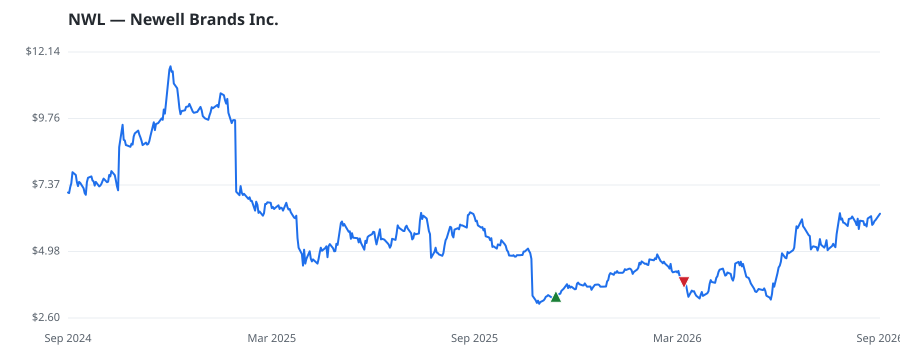

bullish · bearish · n/a — dots: price>SMA10 · SMA10>SMA50 · SMA50>SMA200 · up>down volume (20d)
Other · mid cap
Members who bought NWL earned a dollar-weighted +82.9% from their disclosure dates, versus +16.9% for the S&P 500 over the same holding windows (+66.0% alpha).

▲ green = a disclosed purchase · ▼ red = a disclosed sale (plotted on disclosure date)
Newell Brands Inc is an American consumer goods company with a portfolio of brands, including Rubbermaid, Sharpie, Graco, Coleman, Rubbermaid Commercial Products, Yankee Candle, Paper Mate, FoodSaver, Dymo, EXPO, Elmer's, Oster, NUK, Spontex and Campingaz. The group is focused on delighting consumers by lighting up everyday moments. Its segments are Home and Commercial Solutions, Learning and Development, and Outdoor and Recreation. The group geographic areas are the United States, Canada, Europe, the Middle East and Africa, Asia Pacific, and Latin America. PLASTICS PRODUCTS, NEC · website
| Revenue | $7.2B | Net income | $-285.0M |
|---|---|---|---|
| Operating income | $39.0M | Diluted EPS | $-0.68 |
| Assets | $10.7B | Equity | $2.4B |
| Member | Chamber | Out-performer | Disclosed buys $ | Return on buys |
|---|---|---|---|---|
| Peter Allen Stauber | house | — | $32K | +82.9% |
Disclosed $ figures are bracket midpoints — filings report ranges (e.g. $1,001–$15,000), not exact amounts.